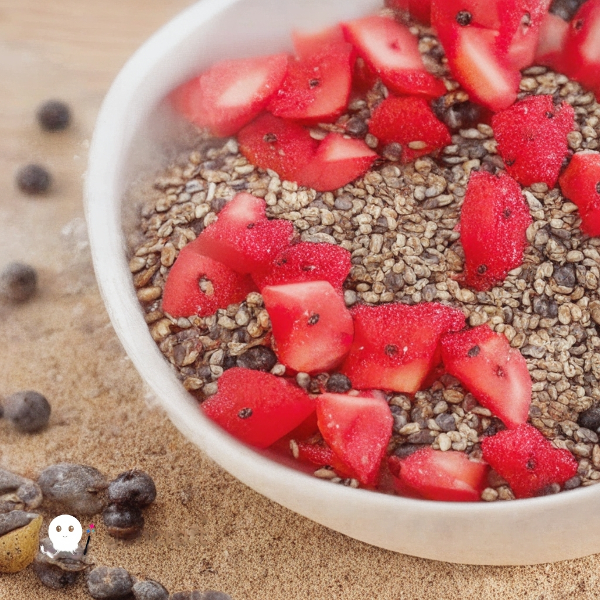

Pudim de Chia com Frutas Vermelhas

Pudim de Chia com Frutas Vermelhas
Ingredientes
- 1/2 xícara de leite de amêndoa
- 1/2 xícara de iogurte grego
- 2 colheres de sopa de sementes de chia
- 1 colher de sopa de mel
- 1 xícara de frutas vermelhas
Modo de Preparo
- Em uma tigela, misture o leite de amêndoa, o iogurte grego, as sementes de chia e o mel.
- Cubra a tigela com filme plástico e leve à geladeira por pelo menos 2 horas, ou até que a mistura se transforme em um pudim espesso.
- Sirva o pudim em taças individuais e cubra com as frutas vermelhas.
- Bom Apetite!
Informações Nutricionais
| Nutrientes |
Porção (1/2 xícara) |
%VD |
| Valor Calórico (Kal) |
120,23 |
7,22 |
| Carboidratos (G) |
16,18 |
7,02 |
| Proteínas (G) |
5,13 |
2,25 |
| Gorduras totais (G) |
5,57 |
3,78 |
| Fibras Alimentares |
8,98 |
2,68 |